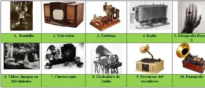

MÁS ALLÁ DE LA BOMBILLA
- El Fonógrafo: Su invento favorito, el primero capaz de grabar y reproducir sonido humano.
- El Kinetoscopio: Un precursor del proyector de cine.
- Baterías de Ferro-Níquel: Edison ya visionaba la movilidad eléctrica hace un siglo.

Bocetos y prototipos de sus múltiples patentes.